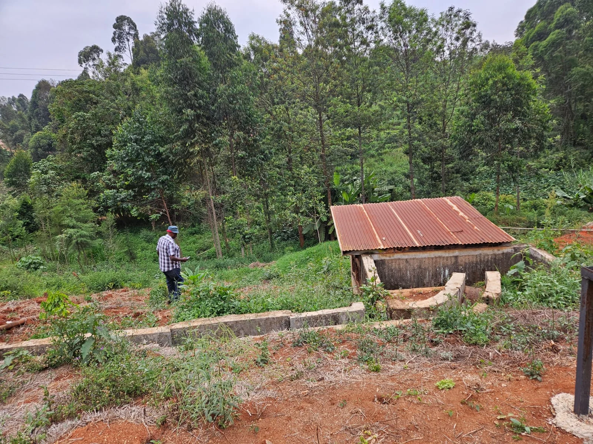

Eco-friendly coffee processing and water re-circulation, Embu and Kiambu
Design and overseeing installation of eco-friendly coffee processing machinery, and rehabilitation and improvement of water re-circulation systems, in four coffee factories in Embu and Kiambu. The scope covered tender evaluation, equipment selection, equipment layout and water re-circulation drawings, bills of quantities and tender documents, and construction supervision.
- Four coffee factories
- Equipment selection
- Construction supervision